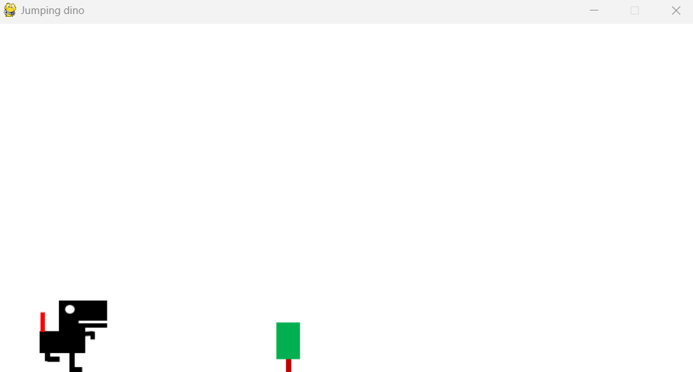
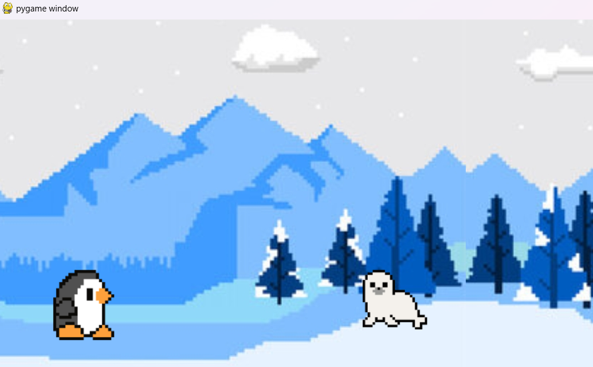
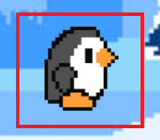
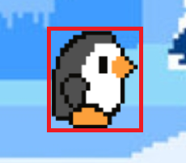

팀원들과 함께 pygame을 사용하여 달리기 게임을 제작했다. 첫 번째 제작기에서는 게임의 종류와 제목을 정하고 샘플코드를 변형해가며 게임에 적용시켰던 과정과 하면서 느낀 한계점에 대해 포스팅 했다.
1. 게임 형식과 제목 정하기
게임을 만들기 전 팀원들과 어떤 종류의 게임을 만들지 정해야 했고 여러가지 의견 중 달리기 게임을 만들기로 결정했다.
-
크롬 공룡 달리기 게임과 비슷한 형식의 게임을 만들기로 함
-
컨셉은 펭귄이 달리면서 장애물을 피하고 물고기를 먹으면 스코어가 올라가는 형식
-
게임 제목은 물고기 사냥 대작전(fish hunting adventure)
2. 샘플 코드 분석하기
우선 간단한 형식의 달리기 게임 코드를 가지고 왔다.(출처코드)  공룡이 달리면서 점프하여 나무를 피하면 되는 간단한 게임이었는데 일단 게임을 플레이하면서 바로 느낀 문제점은 나무와 닿아도 게임이 끝나지 않는 것이었다. 그 다음으로 코드를 한 번 쭉 살펴보면서 각 메소드들이 무슨 역할을 하는지 알아봤다.
-
pygame.display.set_mode()를 사용해 스크린을 지정
-
pygame.time.Clock()으로 프레임 설정
-
pygame.image.load()로 이미지 로드
-
screen.fill()로 배경색 채우기
-
screen.blit()으로 이미지 그리기
이미지들이 움직이는 것은 어떻게 구현되어 있는지 알아봤다.
-
공룡 이미지가 움직이는 것은 2개의 이미지를 사용하여 True, False를 계속 변경해가며 screen.blit()으로 서로 다른 이미지를 그림
-
나무 이미지가 다가오는 것은 x좌표를 계속 줄여가며 이미지를 그림
초기화 하는 코드를 제외한 전체적인 흐름은 while문 내부에서 종료 이벤트가 들어오기 전까지 무한 루프를 돌면서 게임이 진행되는 방식이었다.
3. 변경사항 적용하기

처음에는 가장 건드리기 쉬운 이미지를 변경해보기로 했다. 공룡 이미지를 펭귄으로 나무 이미지를 바다사자 이미지로 변경하는 것이다. 그런데 막상 이미지를 변경하고 보니 이미지의 사이즈가 너무 큰 문제가 있어서 코드를 수정했다.
imgPeng1 = pygame.transform.scale(imgPeng1, (90, 90))
imgPeng2 = pygame.transform.scale(imgPeng2, (90, 90))
imgSeal = pygame.transform.scale(imgSeal, (80, 80))
background = pygame.transform.scale(background, (MAX_WIDTH, MAX_HEIGHT))
-
펭귄과 바다사자 이미지의 크기를 적절하게 조정
-
배경 이미지도 로드한 후 스크린 크기에 맞게 사이즈 조정
다음으로 펭귄이 점프하는 동작이 조금 어색한 것 같아 점프를 조금 더 자연스럽게 바꾸고 싶다는 생각이 들었다. 파이게임 점프구현에 대해 구글링을 해보니 속도, 질량을 이용하여 조금 더 매끄러운 점프를 구현할 수 있는 것 같아 바로 적용했다.
velocity = 3.8
mass = 2
if is_go_up:
if velocity > 0:
F = (0.5 * mass * (velocity * velocity))
peng_y -= round(F)
velocity -= 1
elif not is_go_up and not is_bottom:
F = -(0.5 * mass * (velocity * velocity))
peng_y -= round(F)
velocity -= 1
그리고 두 이미지의 좌표가 서로 겹치는 이벤트가 있는지 확인하기 위해서 colliderect를 사용했다. 이미지에 get_rect()메소드를 사용하면 모양을 반환받을 수 있고, 그 모양들에 colliderect를 적용하면 된다.
peng_char = imgPeng1.get_rect()
seal_char = imgSeal.get_rect()
if peng_char.colliderect(seal_char)
이벤트 발생시 종료되도록 했는데 완전히 닿지 않은 상태에서 게임이 계속 종료 되어서 원본 이미지를 확인해봤다.
 
이미지 안에 있는 사물보다 이미지의 범위가 더 넓어서 발생한 문제였는데 이를 해결하기 위해 이미지를 사물의 크기에 딱 맞게 잘라냈다.
4. 한계
이렇게 계속 하다보니 새로운 장애물인 갈매기도 추가해야 하고 점수를 얻는 물고기도 추가해야 하는데 점점 가독성이 떨어지고 코드 수정에 불편함이 느껴져서 구조 개선을 해야겠다는 생각을 했다. 제작기 2편에서 이어진다.